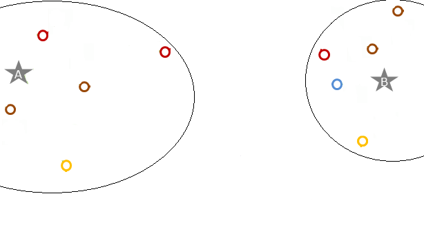
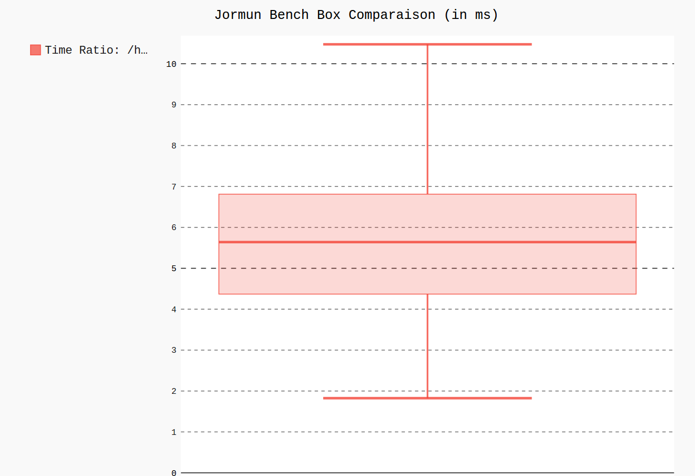

Sprint Review 8
Proudly presented by Noémie Lehuby, Rémy Abi-Khalil, David Quintanel, Thomas Noury and our beloved POs: Viriginie Schmidt, Vincent Mulard, Maxime Henon, Etienne Bousquié.
Les sujets de la démo
- ADM & Plan Book Ticket
- Transilien
- STIF
- Routier
- Web
- Autres tâches & bugs
1. ADM & Plan Book Ticket
- POI OSM : import de depositaires
Pour : Tous nos clients ADM
POI OSM dépositaires
- POI OSM : import de depositaires
Pour : Tous nos clients ADM - Achat de titres sans connexion à un compte
Pour : Kisio Digital - DONE! - Se connecter à un compte
Pour : Montargis & Orléans + Prospects - Covoiturage intégré
Pour : Les clients qui veulent du covoiturage
2. Transilien
Préparer la mise en service du 23 novembre
- Stabilisation des tests OGV1
Pour : Transilien - DONE! - Déploiement automatique OGV1
Pour : Kisio Digital - DONE! - Ajout de logs Chaos & Kronos
Pour : Kisio Digital - DONE!
3. STIF
- Plug'n'Play
Pour : STIF - DONE! - Give Me Data
Pour : STIF Lab - DONE! - Vie courante pour une doc de déploiement
Pour : STIF - DONE!
Plug'n'Play
- Profil UFR
- Géovélo
- iDVroom
- VLS en temps réel
Give Me Data
4. Routier
- Travaux sur les performances
Pour : clients - DONE! - Retour du TAD zonal
Pour : clients qui ont du TAD

Mesure des pertes de performances
Amélioration des performances
Amélioration des performances
Amélioration des performances
Amélioration des performances
Amélioration des performances
Amélioration des performances
Identifier les pertes de performances
5. Web
- Bouton d'aide itinéraire
Pour : Auvergne Mobilité - DONE! - Logos de services de covoiturage
Pour : Clients qui ont du covoiturage - DONE!
6. Autres tâches & bugs
Focus sur...
- CD29
- Bouclage des déploiements Bibus & Horizon
- Fusio Auvergne
Merci à tous !
Faisons un ROTI !